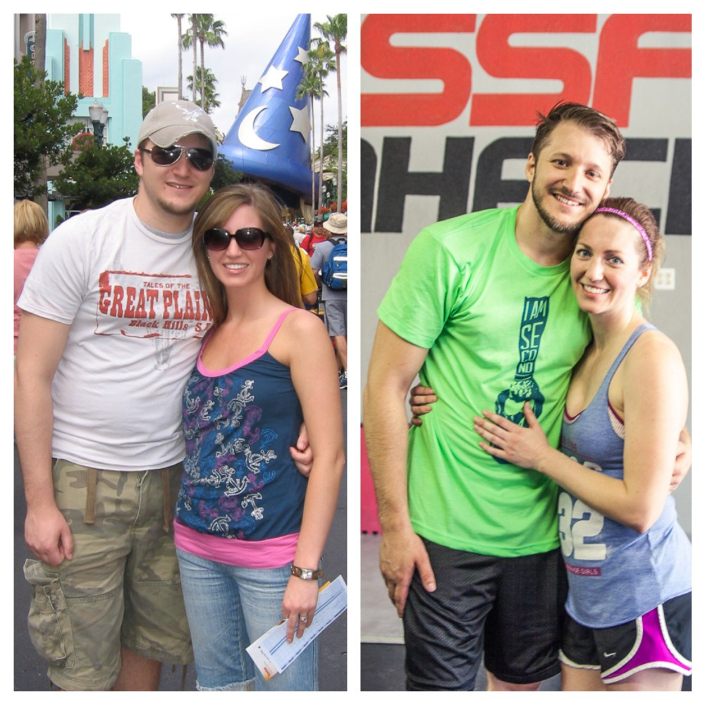
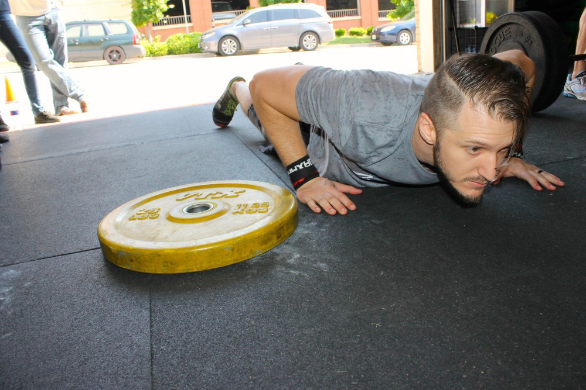
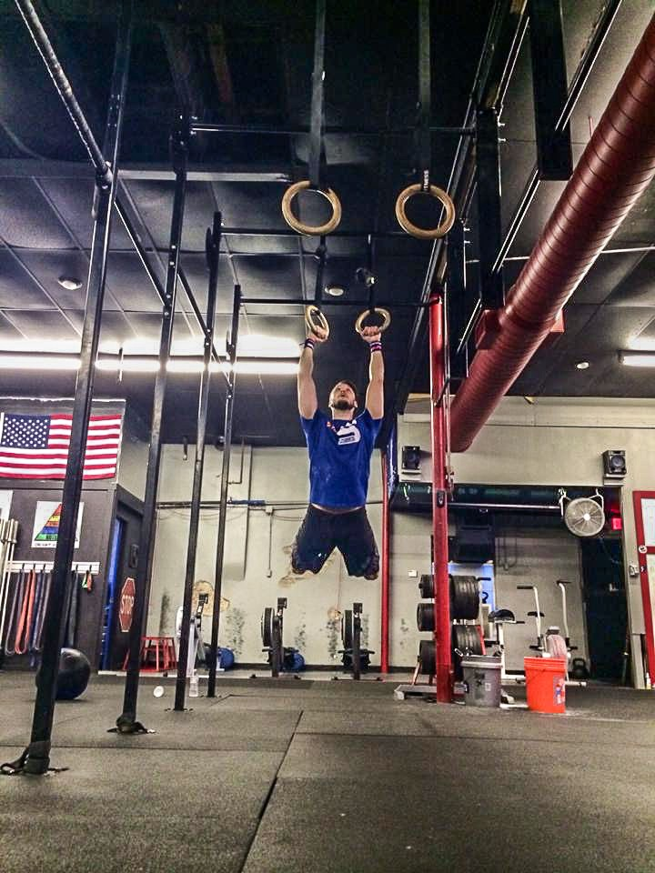
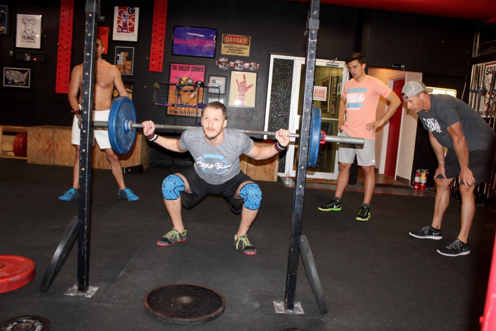
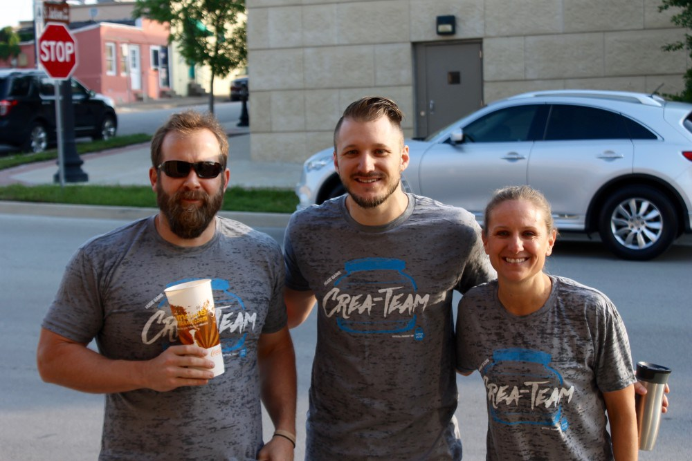

I was recently interviewed for CrossFit Waxahachie success stories section. It’s always fun to look back and see how you compare in the past. You can easily get caught up in the now and totally forget where you started. I am super happy with my fitness progress over the last 4 years. I hope this inspires someone to take a step towards change. Originaly posted on CrossFit Waxahachie.

What brought you to CrossFit Waxahachie when you very first started?
One day I noticed I was out of shape. My office had a fire drill and all I had to do was walk down the stairs, but I was so winded. That was my wake up call, I knew I needed a change. A 20 something year old shouldn’t have been dying from just walking down stairs. My wife had just started working out and I joined her at our local gym. We did the typical legs day, arms day and tons of cardio on the treadmill. We were taking a trip to Hawaii and I had to “look good” and get in shape for that. Well, it worked, but didn’t last for long and I slipped back into my old ways and became pudgy again.
Several years later a work buddy of mine began drastically dropping weight and gaining muscle. I finally asked him what he was doing and he told me about the Paleo diet and Crossfit. Thinking that Crossfit wasn’t something I would be into, I started down the Paleo path. Kelly, my wife, thought I was crazy. The first week on the Paleo diet I lost around 10 pounds. Even though I was intimidated, I decided to try Crossfit Waxahachie in October 2011. That was one of the best decisions I’ve ever made.

What has been your biggest life change since starting CrossFit Waxahachie?
My whole outlook on my health and my family’s health has been impacted by Crossfit Waxahachie. I lost at least 20 pounds after starting and then began building muscle. I feel like I am healthier in my 30’s than I’ve ever been. I look forward to seeing what the WOD is every day and challenging myself to be better than I was yesterday.

How has CFW had an effect on your family?
Have you met Kelly Cypret??? Well that’s all my doing! Muahahahahah. No really, Kelly thought I was crazy and wouldn’t try Crossfit for the longest time, but I finally wore her down. Crossfit gives us something else in common that we can share together. Now my two kids are growing up at the box and I couldn’t be more proud. My son Carson does Crossfit Kids in the summer and my two year old daughter, Harper, knows what pull ups are and tries to do them. My entire family reaps the benefits of CFW.
Do you have a favorite workout or lift?
My favorite lift would have to be Overhead Squats. I also enjoy ring muscle ups and my favorite WOD is Helen.
What is your favorite thing about CrossFit Waxahachie?
The best thing about Crossfit Waxahachie is the community The people are what keeps me coming back, not just the work outs. I have made great friends from the box, friends that I wouldn’t have known without this place. Also the encouragement I’ve received by not only Coach Chris, but everyone in my 6am class.

What would you say to someone who is considering CrossFit Waxahachie as a place to get healthier and even more awesome?
Just try it. Don’t wait don’t wait until you’re “fit.” Just come as you are. Scale as you need to. CFW will take you as you are! You’ll be amazed at what you can do and the encouragement that surrounds you. Your first year is full of amazing achievements that you never would’ve thought possible. Crossfit Waxahachie is an awesome place to be with some of the best people around!
